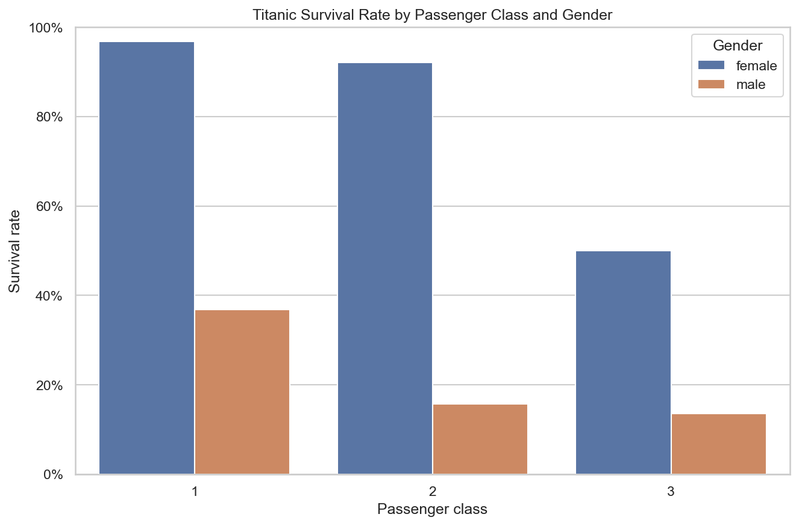
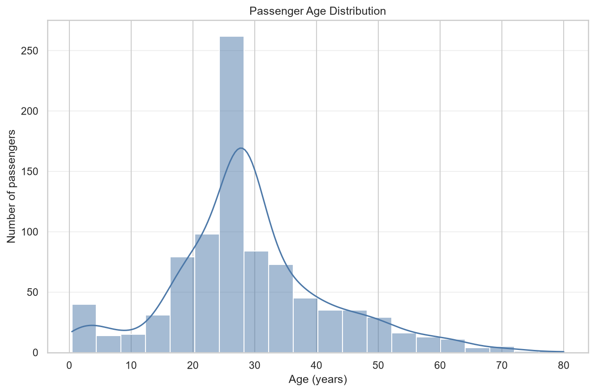
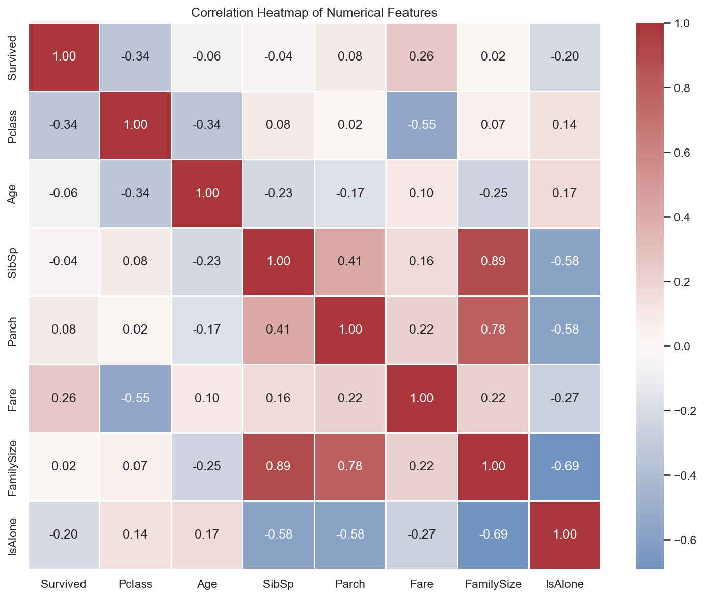
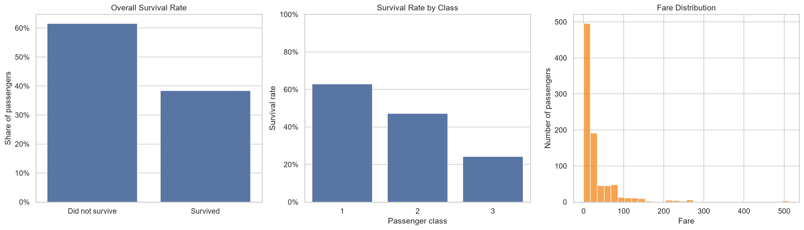
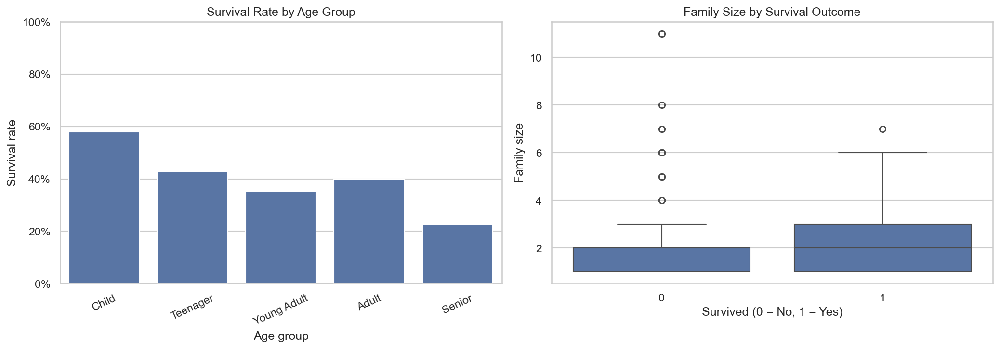

Survival by class and gender
Compares observed survival rates across passenger classes and between female and male passengers.
A clear, reproducible exploration of the Kaggle Titanic training dataset: from data quality checks and transparent cleaning to meaningful features, visual analysis, and evidence-based observations.
The analysis follows a practical data-analyst workflow and keeps every conclusion grounded in the observed Titanic training data.
No machine-learning model is included. The project is intentionally limited to exploratory analysis, descriptive statistics, feature engineering for interpretation, and visual storytelling.
Only the competition train.csv is used; no test or submission file is needed.
Source: Kaggle Titanic Competition ↗
The notebook checks shape, columns, data types, missing values, duplicates, unique values, and descriptive statistics before cleaning.
SibSp + Parch + 1 — summarizes the passenger's accompanying family members.
Identifies passengers whose FamilySize equals one.
Groups ages into child, teenager, young adult, adult, and senior categories.
Indicates whether a cabin value was recorded without imputing cabin identifiers.
These charts are generated by the notebook and stored in the root charts/ directory.

Compares observed survival rates across passenger classes and between female and male passengers.

Shows how ages are distributed across the passenger population after the documented median-age handling.

Summarizes relationships among survival, class, age, family counts, fare, FamilySize, and IsAlone.

Provides context through overall survival, class-level survival, and fare distribution views.

Explores survival-rate segmentation by age group and the distribution of family sizes across survival outcomes.
The observations below reflect the existing notebook and README. They describe association in this dataset, not causation.
Survival rates vary across first-, second-, and third-class passengers, making class an important descriptive comparison.
The class-and-gender visualization shows why these attributes are more informative when examined together rather than only as overall averages.
Age groups and family-size categories help describe how the passenger population and observed survival rates differ across groups.
The analysis shows that fare and passenger class are related, so a fare relationship should not be presented as an isolated effect.
This project uses the Kaggle Titanic training dataset to document data quality, apply transparent cleaning, create interpretable features, and examine survival patterns. The findings identify associations involving class, gender, age, family context, and fare. They do not establish causation, and no machine-learning model is used.
Readable, reproducible analysis.
Data preparation and numerical analysis.
Publication-ready exploratory charts.
Documented, step-by-step workflow.
DS_2_Titanic_EDA_byte/ ├── data/ ├── notebooks/ ├── charts/ ├── README.md └── requirements.txt